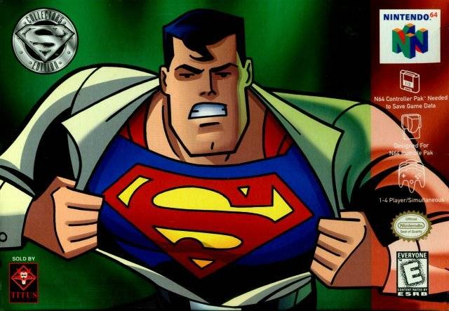

Un site absolument 100% pur chat !
La liste des jeux ou la team Kitty est presente
SPEEDRUNNERS

In a city filled with superheroes, getting to crimes becomes a competition on its own. Fortunately there are enough rockets, bombs, grappling hooks, spikes, and other goodies lying around -- to make the competition fun and fast. Welcome to SpeedRunners. SpeedRunners is a 4 player competitive platformer with grappling hooks, power-ups, and interactive environments. Run, jump, swing around, fire rockets, grapple onto people to knock them off screen.
CALL OF DUTY : INFINITE WARFARE

Call of Duty: Infinite Warfare est un jeu vidéo de tir à la première personne développé par Infinity Ward et édité par Activision, sorti le 4 novembre 2016 sur PlayStation 4, Xbox One et Windows. Le jeu se déroule dans un univers de science-fiction où l'espèce humaine a colonisé le système solaire et où les pays œuvrent ensemble sous l'égide de l'Agence Spatiale des Nations unies (ASNU) qui connait cependant certains opposants, notamment le Front de Défense des Colonies (FDC), une organisation terroriste. Le mode « Campagne » du jeu permet d'incarner le capitaine d'un vaisseau spatial des forces armées de l'ASNU qui doit repousser les terroristes du FDC. Lorsque la première bande-annonce du jeu est dévoilée, celle-ci suscite de nombreuses indignations de la part du public en raison du cadre spatio-temporel du jeu, ce à quoi le P.-D.G. d'Activision, Eric Hirshberg, répond que Call of Duty: Black Ops 2 (2012) a connu un premier accueil similaire et se trouve être le jeu le plus vendu de la franchise. La sortie de ce treizième volet de la série principale Call of Duty est l'occasion pour l'éditeur de proposer à la vente une version améliorée de Call of Duty 4: Modern Warfare (2007), afin que les joueurs puissent bénéficier d'une part d'une expérience de jeu plus réaliste sur Terre et d'autre part, d'une expérience de jeu innovante avec un système de trophée / succès. Une fonction disponible uniquement de la remake, le fait de choisir un personnage féminin. Le jeu sort à la même période que celle de jeux de tirs concurrents, notamment Battlefield 1 qui se place dans un tout autre contexte, celui de la Première Guerre mondiale.
SUPERMAN 64
Superman, aussi connu sous le nom Superman 64, est un jeu vidéo sorti en 1999 sur Nintendo 64. Le jeu a été développé et édité par Titus Interactive. Le jeu est adapté de la série d'animation Superman, l'Ange de Métropolis. Comme Castlevania 64, le 64 de Superman 64 n'est pas écrit sur la boite ni sur l'écran d'introduction. Le 64 a été ajouté par les joueurs pour éviter la confusion avec les autres média Superman.